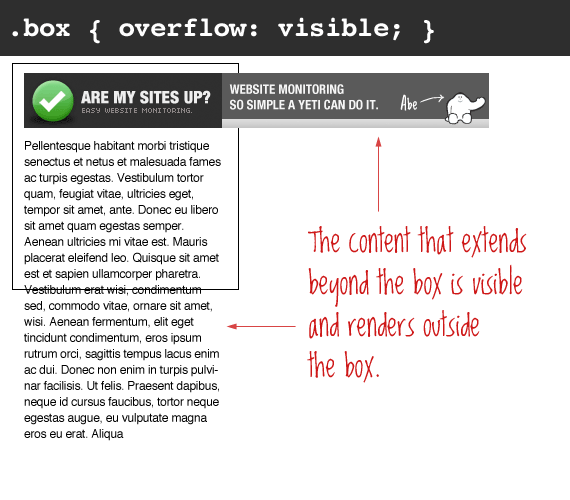
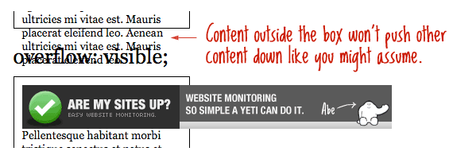
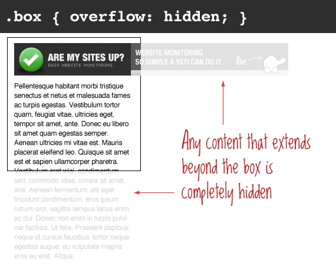
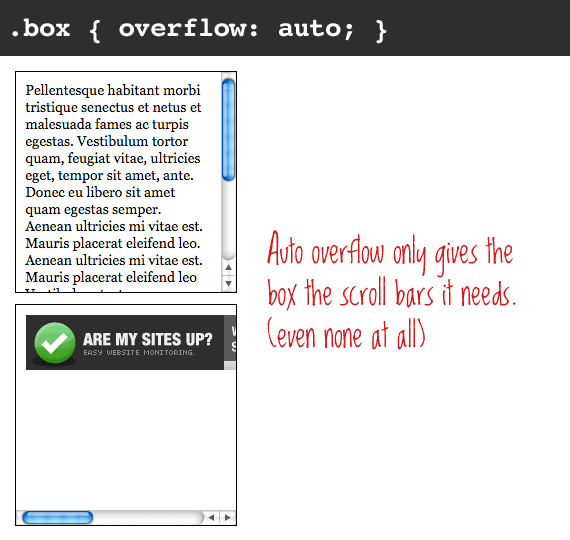
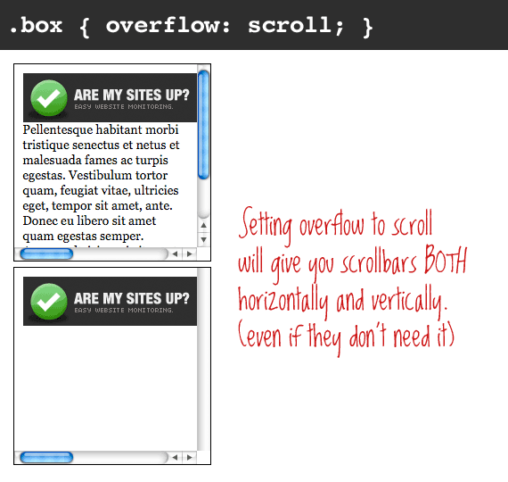
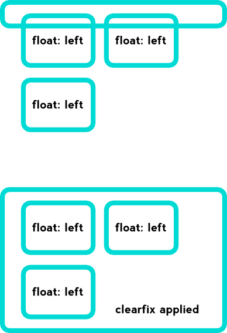
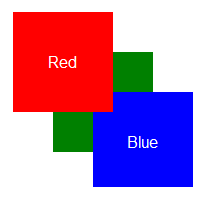

Overflow
overflow: auto | hidden | scroll | visible | inherit;Visible
Overlap
Hidden
Auto
Scroll
Clearfix
.clearfix:after {
visibility: hidden;
display: block;
font-size: 0;
content: " ";
clear: both;
height: 0;
}
.clearfix { display: inline-block; }
/* start commented backslash hack \*/
* html .clearfix { height: 1%; }
.clearfix { display: block; }
/* close commented backslash hack */Border Radius
border-radius: <radius>{1,4} [ / <radius>{1,4}];border-top-left-radius: 0; border-top-right-radius: 0; border-bottom-right-radius: 0; border-bottom-left-radius: 0;
Box Shadow
box-shadow: none | <shadow> [,<shadow>]*
where <shadow>:
inset? <x shift> <y shift> <blur radius> <length> <color>
Gradients

linear-gradient(
[ <angle> | to <side-or-corner> ,]? <color-stop> [, <color-stop>]+ )
\---------------------------------/ \----------------------------/
Definition of the gradient line List of color stops
where <side-or-corner> = [left | right] || [top | bottom]
and <color-stop> = <color> [ <percentage> | <length> ]?linear-gradient( 45deg, blue, red ); /* A gradient on 45deg axis starting blue and finishing red */
linear-gradient( to left top, blue, red); /* A gradient going from the bottom right to the top left starting blue and
finishing red */
linear-gradient( 0deg, blue, green 40%, red ); /* A gradient going from the bottom to top, starting blue, being green after 40%
and finishing red */Web fonts
@font-face {
font-family: 'MyWebFont';
src: url('myfont.woff2') format('woff2'),
url('myfont.woff') format('woff'),
url('myfont.ttf') format('truetype');
}Google fonts
@import url(//fonts.googleapis.com/css?family=Open+Sans);
body {
font-family: 'Open Sans', sans-serif;
}
Fonts Generator
FontsquirrelIcons
IcomoonFontello
Font-Awesome
Bootstrap
Z-Index
div {
z-index: 1; /* integer */
}}Transitions
transition: <property> <duration> <timing-function> <delay>;CSS3 Transforms
transform: <type>;- translate()
- rotate()
- scale()
- skewX()
- skewY()
p {
border: solid red;
-webkit-transform: translate(100px) rotate(20deg);
-webkit-transform-origin: 0 -250px;
transform: translate(100px) rotate(20deg);
transform-origin: 0 -250px;
}Animation
/* @keyframes duration | timing-function | delay |
iteration-count | direction | fill-mode | play-state | name */
@keyframes example {
from {}
to {}
}
@keyframes example {
0% {}
25% {}
50% {}
100% {}
}/* @keyframes duration | timing-function | delay |
iteration-count | direction | fill-mode | play-state | name */
animation: 3s ease-in 1s 2 reverse both paused slidein;
/* @keyframes duration | timing-function | delay | name */
animation: 3s linear 1s slidein;
/* @keyframes duration | name */
animation: 3s slidein;